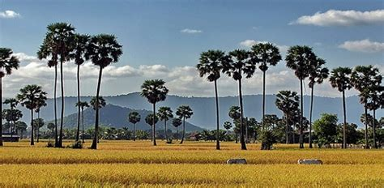
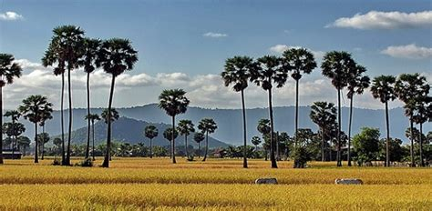

ធាតុអាកាស
ខេត្តនេះមានអាកាសធាតុត្រូពិចសើមនិងសើម។ រដូវខ្យល់មូសុងចាប់ផ្តើមជាធម្មតានៅខែឧសភានិងបន្តរហូតដល់ខែតុលាខណៈដែលនៅសល់នៃឆ្នាំគឺជារដូវប្រាំង។ រយៈពេលដ៏កក់ក្តៅបំផុតនៃឆ្នាំនេះកើតឡើងរវាងខែមីនានិងឧសភាខណៈពេលដែលត្រជាក់បំផុតគឺចាប់ពីខែវិច្ឆិកាដល់ខែមីនា។
Thank you, Chicago!

Thank you, Chicago!

Thank you, Chicago!
ខេត្តកណ្ដាល ខេត្តកណ្តាលគីជាខេត្តមួយដែលស្ថិតនៅជាប់នឹងជាយទីក្រុងភ្នំពេញតាមដងផ្លូវជាតិលេខ៥ នៅភាគខាងត្បួងប្រទេសកម្ពុជា។ ខេត្តកណ្តាលមានទីរួមខេត្តនៅ តាខ្មៅ។ ខេត្តកណា្តលមានស្រុកចំនួន១១ ក្រុង១ ឃុំ១៤៧ ភូមិចំនួន១០៨៧ និង១៤៧សង្កាត់ មានប្រជាជនចំនួន ១០៧៥១២៥នាក់ ហើយខេត្តនេះផងដែរមានផែ្ទដី ៣៥៦៨គីឡូម៉ែតការេ។ ប្រជាជនខេត្តកណា្តលភាគច្រើនជាប្រកបរបរកសិកម្ម ដាំដំណាំ ក្រៅពីនេះរដូវធើ្វស្រែពួកគាត់មានរបរមួយទៀតគឺ របរឡើងត្នោត និងធើ្វស្រូវប្រាំង ព្រមទាំងដំណាំផ្សេងៗទៀត ដើម្បីផ្គត់ផ្គង់ជីវភាពគ្រួសាររបស់ពួកគាត់។
ខេត្តកណ្ដាល ខេត្តកណ្តាលគីជាខេត្តមួយដែលស្ថិតនៅជាប់នឹងជាយទីក្រុងភ្នំពេញតាមដងផ្លូវជាតិលេខ៥ នៅភាគខាងត្បួងប្រទេសកម្ពុជា។ ខេត្តកណ្តាលមានទីរួមខេត្តនៅ តាខ្មៅ។ ខេត្តកណា្តលមានស្រុកចំនួន១១ ក្រុង១ ឃុំ១៤៧ ភូមិចំនួន១០៨៧ និង១៤៧សង្កាត់ មានប្រជាជនចំនួន ១០៧៥១២៥នាក់ ហើយខេត្តនេះផងដែរមានផែ្ទដី ៣៥៦៨គីឡូម៉ែតការេ។ ប្រជាជនខេត្តកណា្តលភាគច្រើនជាប្រកបរបរកសិកម្ម ដាំដំណាំ ក្រៅពីនេះរដូវធើ្វស្រែពួកគាត់មានរបរមួយទៀតគឺ របរឡើងត្នោត និងធើ្វស្រូវប្រាំង ព្រមទាំងដំណាំផ្សេងៗទៀត ដើម្បីផ្គត់ផ្គង់ជីវភាពគ្រួសាររបស់ពួកគាត់។
ខេត្តនេះមានអាកាសធាតុត្រូពិចសើមនិងសើម។ រដូវខ្យល់មូសុងចាប់ផ្តើមជាធម្មតានៅខែឧសភានិងបន្តរហូតដល់ខែតុលាខណៈដែលនៅសល់នៃឆ្នាំគឺជារដូវប្រាំង។ រយៈពេលដ៏កក់ក្តៅបំផុតនៃឆ្នាំនេះកើតឡើងរវាងខែមីនានិងឧសភាខណៈពេលដែលត្រជាក់បំផុតគឺចាប់ពីខែវិច្ឆិកាដល់ខែមីនា។
ខេត្តកណ្តាលជាឈ្មោះខេត្តមួយក្នុងរចនាសម្ព័ន្ធគ្រប់គ្រងរដ្ឋបាលនៃ ប្រទេសកម្ពុជា ពាក្យនេះពុំដឹងជាមានប្រវត្តិនិងប្រភពដើមយ៉ាងណាទេតែតាមការ ស្រាវជ្រាវបានឱយដឹងថាក្នុងផែនទី ព្រះបាទនរោត្តម (១៨៦០-១៩០៤) និងផែនទីព្រះបាទស៊ីសុវត្ថិ (១៩០៤-១៩២៧) ព្រះរាជាណាចក្រកម្ពុជាចែកចេញជាច្រើនខេត្តក្នុងនោះពុំមាន ឈ្មោះខេត្តកណ្តាលទេ កាលនោះឈ្មោះខេត្តមួយចំនួនជាឈ្មោះស្រុកសព្វថ្ងៃដូចជាខេត្តល ្វាឯម ខេត្តស្អាង ខេត្តកោះធំ ខេត្តកណ្តាលស្ទឹង ជាដើម (ឯកសារមហាបុរស)។ បើតាមកំនត់ត្រាចារឹកនៅចេតិយអង្គឌួងនិងចេតិយបូរាណជាច្រើនទៀតលើភ្នំព្រះរាជទ្រព្យស្រុកពញាឮ យើងយល់ថាក្នុងរាជព្រះបាទនរោត្តមស៊ីសុវត្តិ ភ ្នំព្រះរាជទ្រព្យនេះស្ថិតក្នុងខេត្តសំរោងទង (ឈ្មោះស្រុកមួយរបស់ខេត្តកំពង់ស្ពឺសព្វថ្ងៃ) តែក្រោយមកក្នុងរាជ្យព្រះបាទស៊ីសុវត្ថិមុនីវង្ស (១៩២៧-១៩៤១) មានការរៀបចំព្រំប្រទល់ខេត្តជាថ្មីទើបបានជាភ្នំព្រះ រាជទ្រព្យត្រូវស្ថិតនៅក្នុងខេត្តកណ្តាលវិញ (កំណត់ត្រាចារឹកចេតិយព្រះស៊ីសុវត្ថិ) ដូចនេះ យើងអាចសន្និដ្ឋានបានថាខេត្តកណ្តាលកើតមានក្នុងរចនាសំព័ន្ធរដ្ឋបាល ចាប់តាំងពីរាជ្យព្រះបាទស៊ីសុវត្ថិមុនីវង្ស សម័យដែលអាណានិគមបារាំងគ្រប់គ្រង។
ខេត្តកណ្តាលជាខេត្តមួយក្នុងចំណោមខេត្ត- ក្រុងទាំំង ២៤ នៃព្រះរាជាណាចក្រកម្ពុជា ដែលលាតសន្ធឹងហ៊ុំព័ទ្ធរាជធានីភ្នំពេញ តាមបណ្តោយដងទនេ្លមេគង្គ ទនេ្លសាប ទនេ្លបាសាក់ និងមានព្រំប្រទល់ :
ខាងជើងជាប់នឹងខេត្តកំពង់ចាម និង ខេត្តកំពង់ឆ្នាំង
ខាងលិចជាប់នឹងខេត្តកំពង់ស្ពឺ
បខាងត្បូងជាប់នឹងខេត្តតាកែវ និង ព្រំប្រទល់ប្រទេសវៀតណាម
ខាងកើតជាប់នឹងខេត្តព្រៃវែង
ប្រាសាទភ្នំតាម៉ៅ: ស្ថាបនាឡើងក្នុងសតវត្សទី១១ ស្ថិតនៅក្នុងស្រុកបាទី។
ខេត្តកណ្ដាលដើរតួជាខ្សែក្រវាត់សេដ្ឋកិច្ចនៃរាជធានីភ្នំពេញ។ ការធ្វើកសិកម្ម និង ការនេសាទគឺជាឧស្សាហកម្មសំខាន់ពីរនៃខេត្តនេះ។ ផលិតផលសំខាន់រួមមាន ប្រេងដូង សណ្ដែកដី ស្រូវ និង ម្រេច។ បន្ថែមពីការធ្វើស្រែចម្ការ និង ការនេសាទត្រី ខេត្តនេះក៏ទ្រទ្រង់ឧស្សាហកម្មផលិតតាមផ្ទះដែលកំពុងរីកលូតលាស់ មានឯកទេសខាងចម្លាក់ឈើ សូត្រ និង សិប្បកម្ម។ រោងចក្រកាត់ដេរជាច្រើនស្ថិតនៅខេត្តកណ្ដាល ដែលបានផ្ដល់ការងារដល់កម្មករច្រើនជាង ៥០០ ០០០ នាក់។
រមណីយដ្ឋានរមណីយដ្ឋានដែលស្ថិតនៅក្នុងខេត្តកណ្ដាល

© រក្សាសិទ្ធិគ្រប់យ៉ាងដោយ Visit Cambodia tours ឆ្នាំ២០១៨
អាសយដ្ឋាន
អគារលេខ ៣០៨ មហាវិថីព្រះមុន្នីវង្ស
សង្កាត់បឹងរាំង ខណ្ឌដូនពេញ
Visit Cambodia tours ជាគេហទំព័រ សម្រាប់ធ្វើការស្វែងរកកន្លែងកម្សាន្ត និង បញ្ជាក់បន្ថែមនៅពត័មានរបស់ខេត្ត។
.jpg)